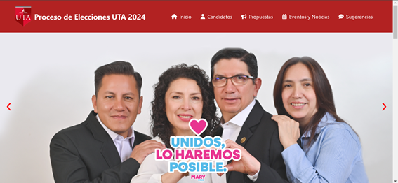

A lo largo de mi desarrollo como programador, he trabajado en varios proyectos. A continuación se presentan dos de ellos, que están disponibles en mi repositorio de GitHub.
El proyecto Laminet es un blog diseñado para compartir contenido de interés general y especializado en diferentes temáticas. La idea principal del proyecto era crear una plataforma en la cual los usuarios pudieran acceder a publicaciones y artículos organizados por categorías. En el desarrollo, utilicé tecnologías como PHP, TypeScript, HTML, CSS y JavaScript para el frontend, junto con una estructura organizada que permite una navegación intuitiva y una experiencia de usuario fluida.
Enlace al proyecto en GitHub: Laminet en GitHub
Este proyecto consistió en el desarrollo de una página web dedicada a informar sobre los partidos políticos dentro de la Universidad Técnica de Ambato. El objetivo principal fue crear un sitio donde los estudiantes y el público en general pudieran encontrar información sobre los diferentes partidos y sus propuestas. Utilicé PHP y CSS para estructurar el contenido de manera clara y accesible, y JavaScript para mejorar la interactividad del sitio.
Enlace al proyecto en GitHub: Página Web de Partidos Políticos en GitHub